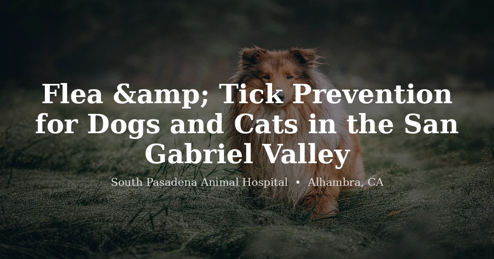

June 14, 2026 · 8 min read
Flea & Tick Prevention for Dogs and Cats in South Pasadena and the San Gabriel Valley

One of the most common conversations we have with new clients is about flea prevention — specifically, why their pet has fleas despite being treated. The short answer: treating the pet alone handles about 5% of the problem. The other 95% is living in your carpet, furniture, and yard.
In the San Gabriel Valley and broader Los Angeles area, fleas are not a seasonal problem you get to ignore for half the year. Our mild winters don't produce the sustained freezing temperatures that kill flea pupae in other parts of the country. Flea control here is a year-round commitment. This guide explains why, covers the tick situation in our area, and walks through how to actually get an infestation under control — and keep it that way.
Why Los Angeles Is Year-Round Flea Season
The cat flea (Ctenocephalides felis) — which, confusingly, is the primary flea species on both dogs and cats — thrives in temperatures between 65–80°F with moderate humidity. Southern California's climate is essentially ideal. Winters in Alhambra, South Pasadena, and the surrounding SGV rarely drop cold enough, for long enough, to break the flea lifecycle outdoors.
Even in a cold year, flea pupae in protected microenvironments — inside your home, in shaded areas under decks, in yard debris — survive fine. The pupa is the most resistant stage of the flea lifecycle. It can remain dormant inside its cocoon for months, waiting for the vibration and warmth of a passing host to trigger emergence. This is why a house that's been "empty" or treated can still produce new adult fleas weeks later.
What this means practically: if your pet has any outdoor access, or if there are other pets or wildlife that pass through your yard, continuous prevention — every month, every year — is the standard of care we recommend.
Understanding the Flea Lifecycle (Why Treating the Pet Isn't Enough)
Adult fleas on your pet represent roughly 5% of the total flea population in an infested environment. The other 95% consists of:
- Eggs (50%): Laid on the pet, fall off into the environment — carpet fibers, couch cushions, pet bedding, cracks in flooring.
- Larvae (35%): Hatch from eggs, move away from light into deeper carpet and upholstery, feed on flea dirt (adult feces).
- Pupae (10%): Form inside cocoons in the environment. Nearly impossible to kill with most insecticides in this stage. Will emerge as adults when conditions are right.
When you apply a flea product to your pet, you kill the adult fleas on that animal. New adults continue to emerge from the environmental reservoir and jump on your pet. The infestation looks like it won't go away — because it won't, until the environmental population is addressed simultaneously. Breaking a flea infestation requires treating the pet AND the home AND, in many cases, the yard.
Signs Your Pet Has Fleas
The most reliable diagnostic sign is flea dirt. This is flea feces — digested blood that looks like tiny black specks or ground pepper scattered through the coat. Check the base of the tail, the groin, and the belly fur. Place some specks on a damp white paper towel: if they dissolve into a reddish-brown color, it's flea dirt.
Other signs: excessive scratching (particularly at the tail base and back of the neck), hair loss and skin redness over the rump or back, small raised bumps across the back (a pattern we call miliary dermatitis in cats), and restlessness. In severe infestations — especially in young or small animals — pale gums from blood loss anemia are possible. That's an emergency.
Flea Allergy Dermatitis
Some pets are allergic to flea saliva — and for these animals, a single flea bite is enough to trigger a significant reaction. Flea allergy dermatitis (FAD) is one of the most common skin conditions we see. The classic presentation in dogs is intense itching and hair loss at the base of the tail. Cats develop a pattern of small crusty bumps (miliary dermatitis) across the back, neck, and belly.
Pets with FAD are often presented to us with no visible fleas — because they groom themselves so aggressively that the fleas are removed. The absence of fleas doesn't mean the absence of flea exposure. Consistent prevention is especially important for flea-allergic animals.
Ticks in the San Gabriel Valley
Ticks are less commonly discussed than fleas in LA, but they're a real concern for dogs that hike or spend time in brushy or wooded areas. Three tick species are relevant in our area:
- Western black-legged tick (Ixodes pacificus): The tick that carries Lyme disease in California. Found in chaparral and wooded areas — Angeles National Forest trails, Arroyo Seco, the Puente Hills, and similar foothill habitats within easy driving distance of Alhambra and South Pasadena.
- American dog tick (Dermacentor variabilis): Larger than the black-legged tick, can transmit Rocky Mountain spotted fever. More commonly found in open grassy areas.
- Brown dog tick (Rhipicephalus sanguineus): Notable because it completes its entire lifecycle indoors and can establish infestations inside homes and kennels. Transmits Rocky Mountain spotted fever.
If you find a tick on your dog, it's best to have it removed promptly and correctly — improper removal can leave mouthparts embedded or increase the risk of disease transmission. Your vet can remove it safely, and we're happy to do this if you bring your dog in. After removal, note the date and watch for signs of tick-borne illness over the following 2–4 weeks: fever, lethargy, reduced appetite, joint swelling, or neurological signs. Lyme disease in dogs typically produces shifting lameness, fever, and lethargy beginning 2–5 months after the tick bite.
Choosing Flea and Tick Prevention
There's a meaningful difference between flea prevention options, and the right choice depends on your pet's age, health history, and lifestyle. Your vet is the right person to guide this decision. Here's a brief overview of the categories:
- Oral preventives (isoxazoline class): Highly effective against fleas and most ticks. Not affected by bathing or swimming. Given monthly or quarterly depending on the product. Some provide broader tick coverage than topicals. These are a convenient, effective option for most healthy adult dogs.
- Topical preventives: Applied to the skin (typically at the back of the neck). Products containing selamectin or fipronil plus an insect growth regulator have good efficacy. Some cats do better with topicals than orals. Allow product to dry before contact with the treated area.
- Collars: Long-acting collars provide continuous protection for 6–8 months and are a good option for owners who find monthly dosing difficult to maintain consistently. Effectiveness varies by product.
Never use a dog flea product on a cat. Many dog flea and tick products contain permethrin, a synthetic pyrethroid that is highly toxic to cats — including exposure from grooming a dog that was recently treated. Signs of permethrin toxicity in cats include muscle tremors, seizures, hyperthermia, and can be fatal without immediate treatment. If a cat is accidentally exposed to a permethrin-containing product, go to a veterinary emergency clinic immediately.
Treating an Active Infestation
If you already have a flea infestation, prevention alone won't resolve it quickly. A comprehensive approach:
- Treat all pets in the household with a veterinary-recommended product — on the same day.
- Wash all pet bedding and soft furnishings in hot water.
- Vacuum thoroughly — carpets, upholstery, baseboards, under furniture. Empty the vacuum outside immediately after.
- Use an environmental spray or fogger containing both an adulticide (kills adult fleas) and an insect growth regulator (prevents eggs and larvae from developing). Products with methoprene or pyriproxyfen as the IGR component are effective.
- Treat outdoor areas where your pet spends time.
- Expect the process to take 3–4 months to fully break the lifecycle. You will likely see new fleas emerge even after treatment — this is the pupa stage completing and is expected. Consistent pet treatment stops each new wave of adults before they can reproduce.
For guidance on the right prevention product for your dog or cat, see our services or contact us to schedule an appointment at our Alhambra clinic.
Frequently Asked Questions
Do I need to give my dog flea prevention year-round in Los Angeles?
Yes. Southern California does not have the hard winters that kill off flea populations in other parts of the country. Our mild winters slow flea activity but do not eliminate it — flea pupae in carpets, bedding, and outdoor environments survive year-round in the SGV and LA area. We recommend continuous, uninterrupted flea prevention for all dogs and cats in the region, regardless of season. A gap in prevention even for a few months is often enough time for a reinfestation to get established.
How do I know if my dog has fleas?
The most reliable sign is flea dirt — small black specks that look like ground pepper, found in your pet's coat (especially around the tail base, groin, and belly). Place some of these specks on a damp white paper towel: if they turn red or reddish-brown, it's flea dirt (digested blood), not regular dirt. Other signs include excessive scratching, hair loss, red or irritated skin, and in cats with flea allergy dermatitis, small crusted bumps across the back. In severe infestations, pale gums can indicate anemia from blood loss.
Why do I keep getting fleas even though I treat my pet?
Because 95% of a flea infestation lives in the environment, not on your pet. Flea eggs, larvae, and pupae are in carpets, furniture, pet bedding, and yard debris. When you treat only the animal, you eliminate the adult fleas on the pet but leave the environmental reservoir untouched. New adult fleas continue to emerge from the environment for weeks to months. Effective flea control requires treating both the pet and the environment simultaneously — vacuuming frequently, washing pet bedding, and using an environmental spray or fogger with an insect growth regulator to break the lifecycle.
Are there ticks in the San Gabriel Valley and Los Angeles area?
Yes. The western black-legged tick (Ixodes pacificus), which can transmit Lyme disease, is found in the foothill areas, nature preserves, and hiking trails in and around the San Gabriel Valley — including trails in the Angeles National Forest and Arroyo Seco watershed areas. The American dog tick and the brown dog tick are also present in the region. Brown dog ticks in particular are well-adapted to indoor environments and can establish infestations inside homes. Dogs that hike, visit dog parks, or spend time in brushy areas are at real risk for tick exposure.
Can I use dog flea products on my cat?
No, and this is a medical emergency if it happens. Many dog flea products contain permethrin, a synthetic pyrethroid that is highly toxic to cats. Even small amounts of permethrin — from a dog product applied to the cat, or from a cat grooming a dog that was recently treated with a permethrin product — can cause severe neurological signs in cats: muscle tremors, seizures, hyperthermia, and death. Always use products labeled specifically for cats on cats. If a cat is accidentally exposed to a dog permethrin product, go to a veterinary emergency clinic immediately.
How do I choose between oral and topical flea prevention for my dog?
Both oral and topical preventives have strong efficacy profiles, and the best choice depends on your dog's individual situation. Oral preventives (including the isoxazoline class — fluralaner, sarolaner, afoxolaner) are convenient, not affected by bathing or swimming, and some provide tick coverage as well. Topical preventives are applied monthly to the skin and are a good option for dogs with certain health considerations that make oral medications less ideal. Collars provide continuous long-acting protection. Your vet can help you weigh the options based on your dog's age, health history, and lifestyle. Book an appointment to discuss what's right for your pet.